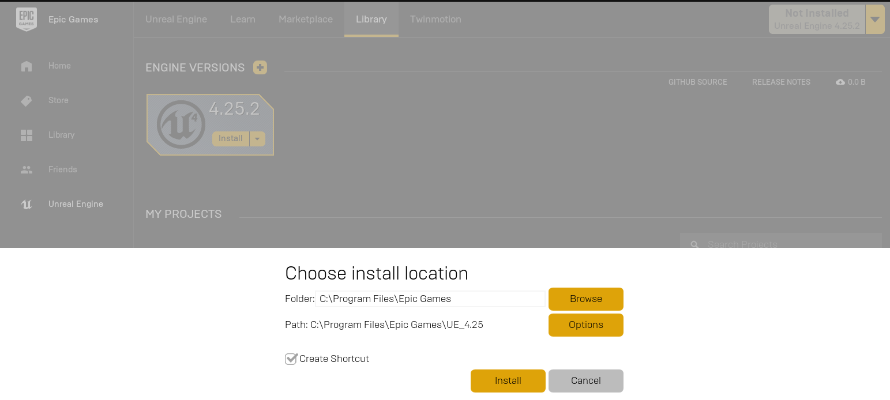

在 Windows 上构建 AirSim#
安装虚幻引擎#
- 下载 Epic Games 启动器。虽然虚幻引擎是开源的，可以免费下载，但仍然需要注册。
- 运行 Epic Games 启动器，在左侧窗格中打开
Unreal Engine选项卡。点击右上角的Install按钮，此时会显示下载虚幻引擎 4.27 及以上版本的选项。选择适合您需求的安装位置，如下图所示。如果您安装了多个版本的虚幻引擎，请确保您使用的版本已设置为当前版本，方法是点击相应版本的“启动”按钮旁边的向下箭头。
注意: 如果您有 UE 4.16 或更早版本的项目，请参阅 升级指南 来升级您的项目。


构建 AirSim#
- 安装 Visual Studio 2022。确保选择使用 C++ 和 Windows 10 SDK 10.0.19041 进行桌面开发（默认选择），并在安装 VS 2022 时在“单个组件”选项卡下选择最新的 .NET Framework SDK。
- 启动
Developer Command Prompt for VS 2022. - 克隆仓库：
git clone https://github.com/OpenHUTB/AirSim.git，然后通过cd AirSim进入 AirSim 目录。
注意
通常不建议将 AirSim 安装在 C 盘。这会导致脚本运行失败，并且需要以管理员模式运行 VS。建议将其克隆到其他盘，例如 D 盘或 E 盘。
- 从命令行运行
build.cmd。这将在Unreal\Plugins文件夹中创建可立即使用的插件，可将其放入任何虚幻引擎项目中。
笔记
构建过程中会弹出Select Unreal Engine Version，选择 hutb 所对应的虚幻引擎，会为AirSim\Unreal\Environments\Blocks.uproject生成Blocks.sln文件，然后直接跳到下面的“如何使用 AirSim”。
构建虚幻引擎项目#
最后，您需要一个虚幻引擎项目来托管您的车辆环境。如果您尚未关闭虚幻引擎和 Epic Games 启动器，请务必在构建您的第一个环境之前将其关闭并重新打开。重新启动 Epic Games 启动器后，它会要求您将项目文件扩展名与虚幻引擎关联，点击“立即修复”即可修复。AirSim 自带内置的“Blocks 环境”，您可以使用它，也可以创建自己的环境。请参阅 设置虚幻环境 。
设置遥控器（仅限多旋翼飞行器）#
如需手动飞行，则需要遥控器。更多详情，请参阅 遥控器设置 。
或者，您可以使用 APIs 进行编程控制，或者使用所谓的 计算机视觉模式 通过键盘移动。
如何使用 AirSim#
按照上述步骤设置 AirSim 后，您可以
-
双击
Unreal\Environments\Blocks.sln文件以加载 Blocks 项目（或您 自定义 的 Unreal 项目中的 .sln 文件）。如果您没有看到 .sln 文件，则可能是您尚未完成上面“构建虚幻引擎项目”部分中的步骤。注意: Unreal 4.27 将自动生成针对 Visual Studio 2019 的 .sln 文件。Visual Studio 2022 将能够加载和运行此 .sln，但如果您想要完全支持 Visual Studio 2022，则需要通过转到“编辑->编辑器首选项->源代码”并为“源代码编辑器”设置选择“Visual Studio 2022”来明确启用支持。
-
选择您的虚幻项目作为启动项目（例如，
Blocks项目，右键解决方案资源管理器中的Block，选择设为启动项目）并确保构建配置设置为Development Editor和Win64。
如果报错1>LINK : fatal error LNK1104: 无法打开文件“D:\work\workspace\UnrealEngine\Engine\Binaries\Win64\UE4Editor-Voice.dll”，则检查解决方案中有没有合适的UE4。
原因：运行GenerateProjectFiles.bat中的powershell -command "& { (Get-ItemProperty 'Registry::HKEY_CLASSES_ROOT\Unreal.ProjectFile\shell\rungenproj' -Name 'Icon' ).'Icon' }，显示的C:\Program Files (x86)\Epic Games\Launcher\Engine\Binaries\Win64\UnrealVersionSelector.exe不是hutb所使用的虚幻引擎。
- 虚幻编辑器加载后，按
运行(Play)按钮。
提示
转到“编辑->编辑器偏好设置”，在“搜索”框中输入“CPU”，并确保未选中“在后台时使用较少的 CPU”(Use Less CPU when in Background)。
请参阅 使用 API 和 settings.json 了解各种可用选项。
Unity 上的 AirSim (实验性)#
Unity 是另一个优秀的游戏引擎平台，我们目前已将 AirSim 与 Unity 集成，并进行了实验性测试。请注意，该集成工作仍在进行中，部分功能可能尚未完全实现。